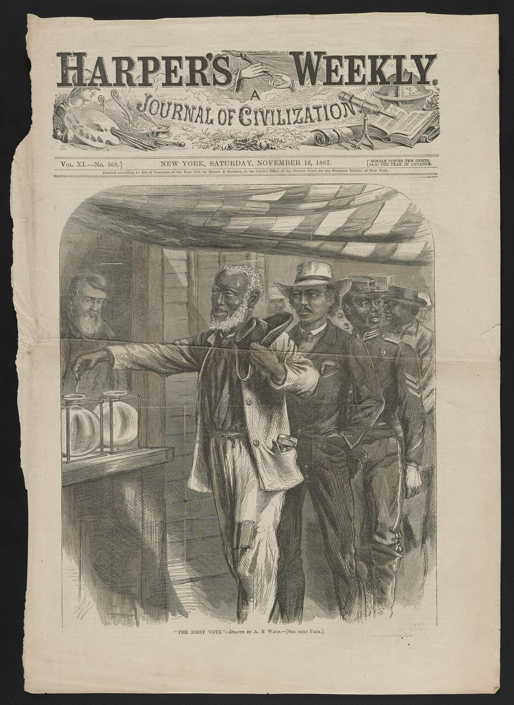

Lesson 1: Who votes? Who governs?
Recap check
- Name one American president you know.
- What does the word vote mean?
- In France, at what age can you vote?
Answer key
- For example George Washington, Abraham Lincoln, Barack Obama, Donald Trump: all correct answers are accepted.
- To choose a person or an answer, for example by putting a ballot in a ballot box.
- At eighteen.
What we need to say
Today you need to explain who does what in Washington, and who is given the vote.
Words to say it
| Word | Meaning | Example |
|---|---|---|
| a citizen | a person who belongs to a country | She is an American citizen. |
| to vote | to choose in an election | You can vote at eighteen. |
| a ballot | the paper or form you use to vote | He puts his ballot in the box. |
| to register | to put your name on the list of voters | Most Americans must register before they vote. |
Use the words
Matching. Match each word with its meaning.
- a citizen
- to vote
- a ballot
- to register
- a branch
- a. one part of the government
- b. to put your name on the list of voters
- c. a person who belongs to a country
- d. the paper or form you use to vote
- e. to choose in an election
Answer key
- a citizen: c
- to vote: e
- a ballot: d
- to register: b
- a branch: a
More word practice
Word families
To explain who does what, you need the verb, the noun and the person. Complete.
- to vote: a vote, a ______
- to elect: an ______, an elector
- to govern: the ______, a governor
- to register: ______ (the action)
- to represent: a ______ (the person)
- to judge: a ______ (the person), a judgement
Answer key
- voter
- election
- government
- registration
- representative
- judge
Read, one sentence per line
- The government of the United States has three branches.
- Congress makes the laws.
- The President carries out the laws and leads the country.
- The Supreme Court decides what the Constitution means.
- Today, you can vote in a federal election if you are an American citizen, if you are eighteen on Election Day and, in almost every state, if you are registered on the list of voters.
- This was not always the case: the 15th Amendment (1870) says the right to vote cannot be refused because of race, the 19th Amendment (1920) gives the vote to women and the 26th Amendment (1971) lowers the voting age to eighteen.
Source: USAGov, Who can vote
Look at the diagram
Diagram: the three branches
makes the laws
House + Senate
carries out the laws
+ Vice President
says what the
Constitution means
Look at the drawing

Picture labelling: The First Vote (1867)
Look at the cover of Harper's Weekly. Find and describe where you see:
- the ballot boxes
- the man who is voting
- a man in a soldier's uniform
- a man in a hat and a smart suit
Answer key
- on the left, two round glass boxes on a table
- in front: an old man with a white beard puts his ballot in the box
- in the queue, the third man, with a cap and stripes on his sleeve
- just behind the voter
Tasks
- Look at the diagram: which branch makes the laws? Which branch judges?
- Describe the 1867 drawing: who is voting? Who is waiting? What are they wearing? Use there is, there are and the present continuous.
- Say it: explain who does what. The laws are made by ______. The laws are carried out by ______. The Constitution is explained by ______. (Use the passive: see Grammar to say it.)
Grammar on the board
To say what is done, and by whom, we need the passive: The laws are made by Congress. The vote is given to citizens at eighteen.
Listen to your teacher, then copy the board.
The passive voice (1) and the present simple for facts
- Rule
- Passive = is / are + past participle.
The laws are made by Congress. - Form
- Present simple passive: am / is / are + past participle (+ by + agent).
Regular: elect → elected. Irregular: make → made, choose → chosen, give → given, hold → held, put → put. - Examples
- Congress makes the laws. → The laws are made by Congress.
- The president is elected every four years.
- Watch out
- The laws are make by Congress. → The laws are made by Congress.
- The president elected every four years. → The president is elected every four years.
- French and English
- French often uses on: On élit le président tous les quatre ans. English prefers the passive: The president is elected every four years. Par = by.
Quick check
- The laws ______ (make) by Congress.
- The president ______ (elect) every four years.
- Past participle of choose?
Answer key
- are made
- is elected
- chosen
Practise
Stage 1. Recognise
Active (A) or passive (P)? Underline the verb.
- Congress makes the laws.
- The laws are made by Congress.
- The president is chosen every four years.
- Citizens vote at eighteen.
- The Constitution is explained by the Supreme Court.
Answer key
- A: makes
- P: are made
- P: is chosen
- A: vote
- P: is explained
Stage 2. Transform
Rewrite in the present passive. Keep by + agent.
- Congress makes the laws.
- The President carries out the laws.
- The Supreme Court explains the Constitution.
- Citizens choose the members of Congress.
- The states organise the elections.
Answer key
- The laws are made by Congress.
- The laws are carried out by the President.
- The Constitution is explained by the Supreme Court.
- The members of Congress are chosen by citizens.
- The elections are organised by the states.
Stage 3. Guided production
Build a present passive sentence with the words.
- the laws / make / Congress
- the president / elect / every four years
- the votes / count / in every state
- the Constitution / explain / the Supreme Court
- the ballot / put / in the ballot box
Answer key
- The laws are made by Congress.
- The president is elected every four years.
- The votes are counted in every state.
- The Constitution is explained by the Supreme Court.
- The ballot is put in the ballot box.
A. Spot the passive
Underline the verb. Is the sentence active or passive?
- Congress makes the laws.
- The laws are made by Congress.
- Citizens vote at eighteen.
- The Constitution is explained by the Supreme Court.
Answer key
- makes: active
- are made: passive
- vote: active
- is explained: passive
B. Complete with is or are + past participle
Use the verb in brackets.
- The laws ______ (make) by Congress.
- The president ______ (elect) every four years.
- The ballots ______ (put) in a box.
- The right to vote ______ (give) to citizens at eighteen.
Answer key
- are made
- is elected
- are put
- is given
Figure of speech
Figures of speech: the symbol and the metaphor
A symbol is a picture that stands for an idea. A metaphor describes one thing as if it were another. In The Awakening (1915), the light of the torch stands for the vote. When we say women won the vote, the vote becomes a prize or a battle.
- In the 1915 cartoon, what does the light stand for?
- What do the dark states stand for?
- Find the metaphor: The vote was a long battle for women.
Answer key
- The vote for women.
- The states where women could not vote yet.
- a long battle: the struggle for the vote is described as a war.
Say it
Oral task: present The First Vote in one minute
Steps
- Say what it is.
- Describe the foreground and the background.
- Explain the message.
- Give your opinion.
- This is the cover of ... from ...
- In the foreground, there is ...
- In the background, I can see ...
- This drawing shows that ...
- I think it is important because ...
Model answer
This is the cover of Harper's Weekly from November 1867. In the foreground, an old man puts his ballot in a glass box. Behind him, a man in a suit and a soldier are waiting. This drawing shows that Black men could vote for the first time. I think it is important because voting is a right for all citizens.
Gap-fill worksheet
- To vote, you must be an American .
- You must be on Election Day.
- makes the laws.
- Since 1920, can vote in every state.
- In most states, you must before you vote.
- You put your ballot in the .
- The 19th gave women the vote in every state.
- A is a person who votes.
- Voting is a protected by the Constitution.
- An is the moment when people choose their leaders.
Answer key
- citizen
- eighteen
- Congress
- women
- register
- ballot box
- Amendment
- voter
- right
- election
Going further (optional)
Modal + be + past participle: The vote cannot be refused because of race. Present perfect: has / have been + past participle: The voting age has been lowered to eighteen.
Translate into English
- Les lois sont votées par le Congrès.
- Le droit de vote ne peut pas être refusé à cause de la race.
Answer key
- The laws are passed by Congress.
- The right to vote cannot be refused because of race.